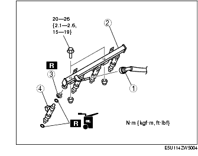
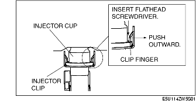
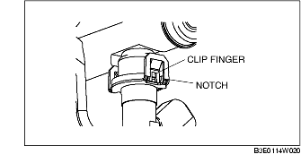
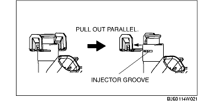
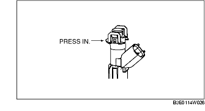

Workshop Manual ➭ ENGINE ➭ FUEL SYSTEM[L8, LF] ➭ FUEL INJECTOR REMOVAL/INSTALLATION [L8, LF]
FUEL INJECTOR REMOVAL/INSTALLATION [L8, LF]
id0114a3800600
{: #wp1059781}
Warning
• Fuel is very flammable liquid. If fuel spills or leaks from the pressurized fuel system, it will cause serious injury or death and facility breakage. Fuel can also irritate skin and eyes. To prevent this, always complete the "Fuel Line Safety Procedure", while referring to the "BEFORE SERVICE PRECAUTION".
-
Follow "BEFORE SERVICE PRECAUTION" before performing any work operations to prevent fuel from spilling from the fuel system. (See BEFORE SERVICE PRECAUTION [L8, LF].)
-
Remove the plug hole plate. (See PLUG HOLE PLATE REMOVAL/INSTALLATION [L8, LF].)
-
Remove the battery cover.
-
Disconnect the negative battery cable. (See BATTERY REMOVAL/INSTALLATION [L8, LF].)
-
Disconnect the fuel injector connector and move the harness slightly out of the way.
-
Remove in the order indicated in the table.{: #wp1059885}

|
Quick release connector (Type A) {: #wp1059917} (See QUICK RELEASE CONNECTOR (FUEL SYSTEM) REMOVAL/INSTALLATION [L8, LF].) {: #wp1060016} |
|
|---|---|
|
2 {: #wp1059990} |
Fuel distributor {: #wp1059993} |
|
3 {: #wp1059997} |
Injector clip {: #wp1060000} (See Fuel Injector Removal Note.) {: #wp1060050} |
|
4 {: #wp1060062} |
Fuel injector {: #wp1060065} (See Fuel Injector Installation Note.) {: #wp1060085} |
-
Install in the reverse order of removal.
-
Complete the "AFTER SERVICE PRECAUTION". (See AFTER SERVICE PRECAUTION [L8, LF].)
Fuel Injector Removal Note
Caution
• Use of a deformed injector clip will cause the fuel injector to be connected incorrectly and could result in fuel leakage. It will also cause the injector to rotate. Therefore, always replace the clip when the injector is removed.
- Insert a flathead screwdriver between the injector cup and clip finger.{: #wp1060171}

*Note*{: #wp1060198}
• When pushing the clip finger outward, deform the finger until it is removed completely from the cup notch.

-
Push the clip finger outward using a flathead screwdriver.
-
Remove the injector with the clip.
-
Remove the clip from the fuel injector using the following procedure:
*Note*{: #wp1060263}
• The clip will not be reused.
(1) Hold the clip using pliers.
{: #wp1060281}(2) Pull the clip parallel to the injector groove and remove it from the injector.

Fuel Injector Installation Note
-
Apply a small amount of clean oil to the injector groove and the O-ring.
-
Temporarily attach a new clip to the injector groove.
*Note*{: #wp1060349}
• When the clip is attached correctly, the central area of the injector and the clip finger positions are aligned.
- Hold the injector firmly and push the clip into the injector until the clip stops sliding.{: #wp1060367}

-
Verify that the injector connector position is correct.
-
Press the injector into the injector cup. Continue pressing until the clip contacts the lower surface of the injector cup.
-
Verify that the injector and clip are correctly installed with the clip locked onto the injector cup notch.